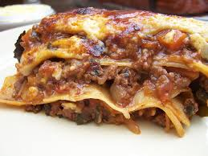

Home
Lasagna

Description
Lasagna is a traditional Italian dish made of thin pasta sheets layered with Bolognese sauce, creamy bechamel and grated cheese. The whole thing is baked in the oven until the surface is golden and slightly crispy.
Ingredients
For 8 people:
- 1 packet of lasagna sheets
- 3 yellow onions
- 1 carrot
- 800g of tomato purée
- 20cl of red wine
- 2 bay leaves
- thyme
- 3 pinches of grated nutmeg
- 70g of grated cheese
- salt
- pepper
- 100g of flour
- 125g of butter
- 2 garlic cloves
- 1 celery stalk
- 600g of minced beef
- 15cl of water
- basil
- 125g of Parmesan
- 1L of milk
Steps
- Sauté chopped garlic cloves and sliced onions in a little olive oil.
- After a few minutes, add the red wine. Let it cook until evaporated.
- Add the tomato purée, water and herbs. Season with salt and pepper, then let simmer over low heat for 45 minutes.
- Prepare the béchamel: melt 100g of butter.
- Off the heat, add the flour all at once.
- Return to the heat and stir with a whisk until the mixture is smooth.
- Add the milk gradually.
- Stir continuously until the mixture thickens.
- Then season with nutmeg, salt and pepper. Let cook for about 5 minutes over very low heat, stirring. Set aside.
- Preheat the oven to 200°C (Gas Mark 6-7). Oil the lasagna dish. Spread a thin layer of béchamel, then add lasagna sheets, Bolognese sauce, béchamel and Parmesan. Repeat the process 3 times.
- On the last layer of lasagna, add only béchamel and cover with grated cheese. Dot with a few knobs of butter.
- Bake for approximately 25 minutes.
- Enjoy!